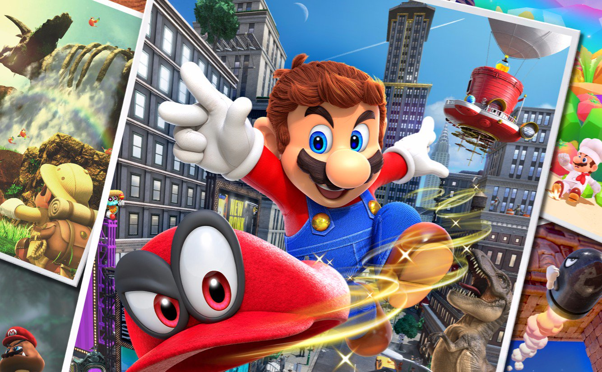

TOP 5 JOGOS NINTENDO
1. Super Mario Odyssey
Durante minhas muitas horas de jogo -- e torço para que eu ainda tenha inúmeras mais, Sonic Mania que me desculpe --, não consegui desgrudar de Super Mario Odyssey. O fato de poder levar o Switch para todos os lados ajudou. Sabe aquele jogo que a gente não consegue parar de explorar, de descobrir segredos escondidos, de resolver os quebra-cabeças mais insanos de tão gostoso que é? Pois é, o mais recente console da Nintendo tem esse título incrível. O número de vendas não me deixa mentir. Fazia muito tempo que um jogo não me cativava tanto, não me prendia e me fazia sentir desafiado. É, a Nintendo acertou em cheio com seu principal personagem e vai ser difícil surgir tão cedo algum game de plataforma que supere a odisseia do ex-encanador. Super Mario Odyssey é o novo Super Mario 64: será lembrado por gerações como um game dos mais espetaculares, uma aula de game design, de desenvolvimento, de acabamento. É o melhor exemplo do que é um videogame nos dias de hoje.
A volta ao mundo A jornada ao redor do globo, atravessando seus mais de 16 mundos com suas cidades únicas e belas, é um trabalho de arte e design primoroso, uma aula que a Nintendo dá há décadas. Agora, com cabeças frescas na direção, a empresa consegue expandir a criação de Shigeru Miyamoto para muito além do que imaginamos. Tudo isso ao mesmo tempo em que mostra um cuidado todo especial com o Mario, sua essência e todas as características que fazem de um game Super Mario um game Super Mario. São inúmeros desafios e quebra-cabeças que são simples, mas muitas vezes nos obriga a quebrar a cabeça para realizar os comandos necessários para chegar a determinadas partes e conseguir os itens necessários -- no caso, as luas. Já no quesito segredos para desvendar, uma das melhores surpresas que os games da série nos proporcionam, Odyssey também tem aos montes. É uma satisfação muito grande encontrar luas a todo o momento, resolver puzzles e encontrar um local secreto atrás do outro. As luas são os itens necessários para fazer você avançar no game e abrir novos mundos. Elas são o combustível da Odyssey, a nave em forma de chapéu que transporta o herói pelo universo, e estão espalhadas por todos os lugares possíveis. E é na maneira como você vai encontrá-las que observamos o tal do “selo Nintendo de qualidade”. Odyssey, diferentemente de outros jogos da franquia, apresenta tutoriais tradicionais apenas para explicar o que você pode fazer com os joy-cons. De resto, você aprende sozinho jogando. O nível de dificuldade é crescente, com luas que podem ser adquiridas ao dar “bundadas” no chão em locais específicos, outras que exigem um certo malabarismo e, ainda, algumas que só surgem após o enfrentamento com um chefe. Claro que você pode voltar a todas as fases e coletar as que faltaram, principalmente depois de você pegar o jeito de jogar com Mario. O que quero dizer é que o nível de dificuldade aumenta a cada novo mundo que visitamos.
link para comprar Super Mario Odyssey2. Fire Emblem: Three Houses
Antes de seu ressurgimento em popularidade nos portáteis 3DS, houve um tempo em que a série Fire Emblem vivia em consoles domésticos. Doze anos depois de Radiant Dawn no Wii, Fire Emblem: Three Houses finalmente voltou à sala de estar no Switch e está melhor do que nunca. Com um hub de base vasto e aberto para explorar, novas maneiras de virar a maré da batalha com seu bando de personagens coloridos escolhidos e uma história que é tão brutal quanto as escolhas que você terá que fazer no campo de batalha, Three Houses é tudo que eu sempre quis em um jogo de estratégia baseado em turnos. Sua grande aventura é repleta de drama e intriga em qualquer uma das três casas titulares que você escolher, e cada uma traz sua própria perspectiva única. Seguir apenas um desses caminhos desde o começo humilde até uma guerra total pelo domínio levou mais de 70 horas, As batalhas aproveitam ao máximo o Switch relativamente poderoso (em oposição ao 3DS) para criar alguns mapas de aparência impressionante. Com novos batalhões que você pode equipar para aprimorar e apoiar suas unidades, os exércitos realmente começam a se parecer com exércitos conforme o mapa se aproxima da luta para mostrar as forças opostas se chocando. A música muda dinamicamente quando se move para o combate de seu ritmo otimista para aumentar a percussão - aumentando a tensão no processo - antes de voltar ao campo de batalha. Fiquei surpreso ao descobrir que você pode até mesmo aumentar o zoom ao inspecionar o mapa para deslizar ao longo do terreno e ver os exércitos reunidos, observando algumas vistas extraordinárias das quais você normalmente apenas vislumbraria em combate.
Os fãs da série podem notar que o tradicional “triângulo de armas” de espadas batem machados batem lanças batem espadas foi praticamente abandonado em Três Casas. Em vez disso, há uma ênfase maior em escolher a arma certa para a pessoa certa - dependendo do nível de habilidade e das estatísticas da arma em si (as espadas ainda têm a melhor precisão geral, enquanto os machados liberam o poder mais bruto e as lanças são equilibradas em o meio). O treinamento de unidades desbloqueia muitos movimentos personalizados para torná-los mais eficazes contra unidades blindadas ou de cavalaria, e aqueles com proficiência alta o suficiente podem até desbloquear habilidades de "quebra" para dar-lhes vantagens contra um determinado tipo de arma que traz de volta a sensação de superioridade da arma. Por causa disso, quase não notei a exclusão do triângulo da arma. Fiquei especialmente surpreso ao ver várias artes de combate retiradas do jogo móvel Fire Emblem Heroes, de todos os lugares, e a inclusão de habilidades estratégicas de reposicionamento de unidade foi muito bem-vinda, permitindo-me trocar, empurrar ou realocar rapidamente minhas unidades mais vulneráveis fora de perigo. Ter batalhões de tropas equipáveis que poderiam reforçar as estatísticas de um personagem individual também significava novas estratégias, incluindo a capacidade de atordoar os atacantes no local - e cuidado, o inimigo pode usar esse truque em você se você for complacente em simplesmente formar uma parede de unidades difíceis. Isso me fez repensar minhas estratégias defensivas.
link para comprar Fire Emblem: Three Houses3. Hollow Knight
Não é difícil se perder no mundo profundo e subterrâneo de Hollow Knight – e quero dizer isso de várias maneiras. As extensas catacumbas de Hallownest têm inúmeros caminhos para explorar e segredos para descobrir. Mas mais do que isso, é rico em conhecimento, história e propósito que me atraiu para um reino Metroidvania 2D que eu queria descobrir cada centímetro. Quanto mais eu me aprofundava em Hollow Knight, mais me surpreendia com a quantidade de conteúdo e liberdade que ele tinha a oferecer. Eu poderia vagar em praticamente qualquer direção e encontrar chefes para lutar, atualizações para coletar e segredos para descobrir. Mas o que é realmente cativante em explorar este reino morto há muito tempo é sua atmosfera. Arte, música, tom de cor, som e um milhão de outros pequenos detalhes se combinam para dar a cada área do mapa um sentido distinto de lugar, e essas áreas se juntam de uma forma que parece intencional e viva.

Na verdade, Hollow Knight conta muito pouco sobre o que está acontecendo e, em vez disso, envia você para um mundo cheio de eventos monumentais que aconteceram muito antes de você chegar: guerras e heróis, amor e cultura, doenças e destruição. As consequências do passado conturbado de Hallownest são deixadas para você descobrir e vêm em alto e bom som, mas apenas se você reservar um tempo para ouvir. É contado de uma maneira muito sutil, mas ensina tanto sobre Hallownest no processo que sinto que poderia praticamente escrever um livro sobre ele. É um conto trágico, cheio de heróis caídos e decisões terríveis, mas ainda consegue dar tempo para momentos bonitos, calmos e esperançosos. E é fácil aproveitar esses momentos, porque a arte desenhada à mão de Hollow Knight é simplesmente linda. É um mundo que consegue se sentir coeso, apesar de seus cidadãos serem adoráveis insetos em uma caverna moribunda. A história (e seu lugar nela) é retomada à medida que você avança. Parte disso por meio do diálogo com os personagens adoráveis e peculiares que ainda residem neste reino decrépito, alguns por meio de eventos importantes da história e outros apenas observando o ambiente e as pistas espalhadas sobre ele. Após minha segunda jogada, tenho uma imagem bastante clara da história de Hallownest, mas é uma imagem que eu mesmo montei.
link para comprar Hollow Knight4. Luigi's Mansion 3
Luigi sempre foi meu preferido entre a famosa dupla dos games -- e sei que é de muitos outros jogadores. O personagem é o oposto de seu irmão confiante, mas carrega um charme e carisma únicos, que renderam uma trilogia de sucesso no qual os holofotes estão todos nele. O ano de 2013 pode ter sido chamado de “Ano do Luigi”, mas é em Luigi’s Mansion 3, já disponível para Nintendo Switch, que o personagem atinge o auge de seu protagonismo. O simpático encanador recebe um convite de Hellen Gravely, a dona do The Last Resort, um gigantesco hotel de luxo, para passar uma temporada gratuita com atendimento de primeira classe para ele e seus convidados: seu irmão Mario, a Princesa Peach, três Toads e o fofo Polterpup. A oportunidade perfeita para aproveitar as merecidas férias.

As possibilidades com o Poltergust G-00 não são inéditas aos familiarizados com os games anteriores. Após paralisar os fantasmas com a luz da lanterna, o jogador pode usar o Poltergust para sugar as criaturas. Antes de capturá-los, no entanto, é preciso dar dano, golpeando o fantasma contra o chão ao apertar repetitivamente o botão A do Switch. Com o Burst, Luigi é propulsado para cima, acertando todos os inimigos ao redor. É extremamente útil nos momentos em que o personagem é encurralado pelos adversários. Ainda, há o “desentupidor” que pode ser usado para abrir portas, alcançar itens e desarmar os inimigos. Joguei a maior parte do gameplay na versão portátil do Switch e nos primeiros minutos tive dificuldade ao mirar com os direcionais, especialmente ao usar o desentupidor. No meu caso foi só questão de costume. Algumas das opções de controle são desconfortáveis, mas há como ativar os mesmos comandos dos botões de ação com a combinação dos gatilhos e botões de ombro -- o que facilita muito o gameplay, por deixar o dedão direito livre para a movimentação da mira. Na versão do console de mesa, com o Pro Controller, a questão de comandos é mais confortável -- apesar de eu preferir a experiência no portátil. Por mais que o jogo inteiro aconteça dentro do mesmo resort de luxo, há um universo novo em cada um dos andares. Conforme coleta os botões do elevador que liberam novas áreas, Luigi percorre mundos completamente diferentes. As mecânicas se repetem, mas o ar é fresco a cada novo andar liberado. A trilha sonora contribui muito positivamente para a imersão neste fofo-e-macabro hotel, combinada a efeitos sonoros engraçadinhos e inusitados -- seja pelo “dialeto” fictício, sejam os barulhos gosmentos de Gooigi ao caminhar, seja pela possibilidade de chamar por Mario quantas vezes quiser com o trêmulo “Ma-Ma-Ma-Maaario?”.
link para comprar Mario Kart 8 Deluxe5. Mario Kart 8 Deluxe
Mario Kart 8 Deluxe inclui tudo isso, além de todos os DLC lançados anteriormente, além de algumas novas adições. Isso significa que você está recebendo 48 grandes pistas e 42 personagens diversos, incluindo novos como Bowser Jr. e os Inklings de Splatoon, e alguns extras legais como a classe de velocidade incrivelmente rápida de 200cc. Cada curso, personagem e modo é desbloqueado desde o início, o que significa que você pode simplesmente entrar e pegar a pista. A única adição estranhamente executada é o Smart Steering, um novo recurso projetado para ajudar a manter os jogadores novatos na estrada. Não é uma má ideia considerar os novatos para ajudá-los a entender um jogo com um conjunto de regras simples como Mario Kart, mas a Nintendo optou por deixar o Smart Steering ativado por padrão e não está imediatamente claro como desativá-lo no menus. Com exceção dessa pequena peculiaridade irritante, esta coleção é um piloto de kart de alta qualidade com muito conteúdo.

Mario Kart 8 Deluxe também fica ótimo no Switch! É tão incrível em 2017 quanto em 2014, e uma ótima direção de arte é um dos principais motivos pelos quais os gráficos resistiram ao teste do tempo. Os designs das pistas, em particular, são excelentes – adoro a forma como o Mario Circuit se torce e se dobra como uma tira de Mobius. Mesmo as faixas refeitas, como SNES Rainbow Road ou F-Zero's Mute City, têm detalhes notáveis que são perceptíveis se você estiver jogando no computador de mão ou em uma TV. A taxa de quadros cai de 60 para 30 quadros por segundo se você jogar em um único Switch com três ou quatro jogadores, mas isso dificilmente é um problema quando a corrida parece tão boa. Se você já possui a versão Wii U, o verdadeiro motivo para adquirir Mario Kart 8 Deluxe é o modo de batalha reformulado. A Nintendo adicionou cinco modos inteligentes baseados em objetivos, e cada um traz seu próprio ângulo competitivo exclusivo para suas oito arenas variadas. Em Balloon Battle, você deve aproveitar os itens e o posicionamento inteligente para marcar pontos estourando os balões de seus rivais. Shine Thief é um riff maluco e cheio de ação em Keep away. Bob-bomb Blast é um confronto explosivo e exagerado. Eu gostaria de estar mais motivado para jogar Coin Runners, no entanto. Coletar ou roubar moedas de outras pessoas é bom, mas não tão empolgante em comparação.
link para comprar Mario Kart 8 Deluxe